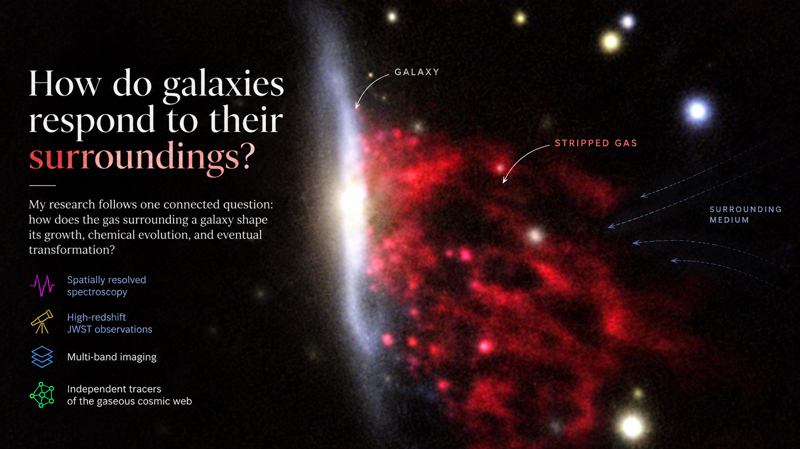
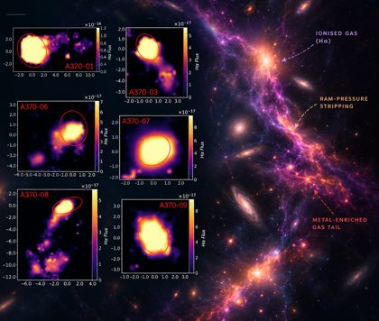
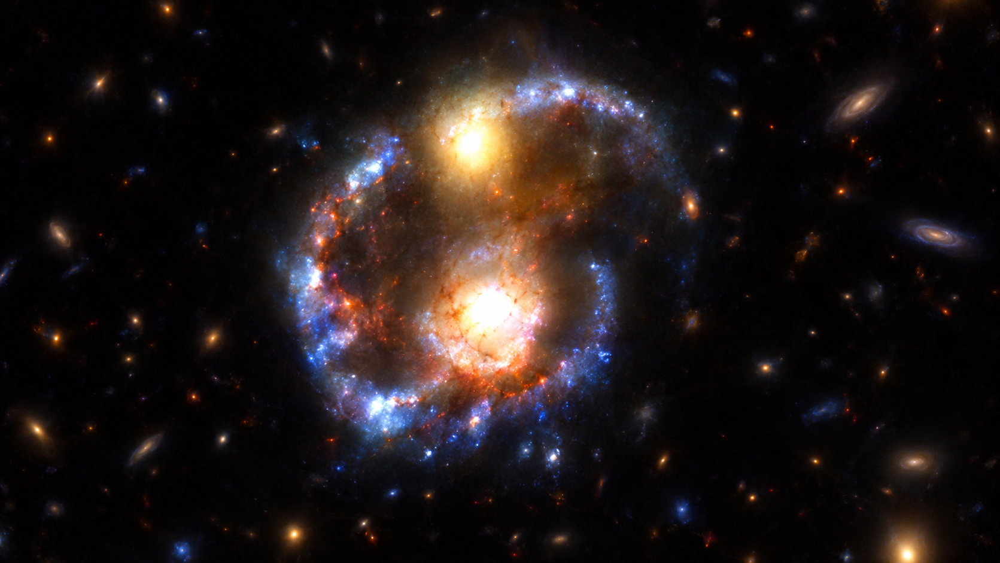
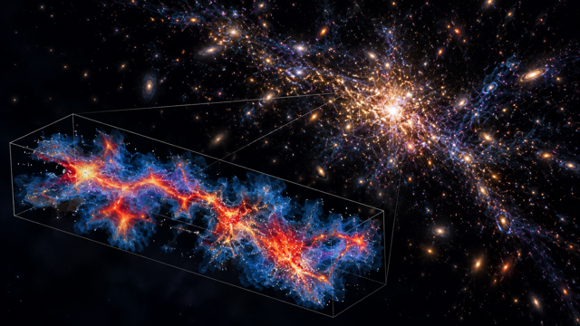

Research
Connecting galaxies to the gas and environments that shape their evolution, from nearby clusters to the early Universe.
My research follows one connected question: how does the gas surrounding a galaxy shape its growth, chemical evolution, and eventual transformation? I approach this from several complementary angles, combining spatially resolved spectroscopy, high-redshift JWST observations, multi-band imaging, and independent tracers of the gaseous cosmic web.
This has taken me from ram-pressure stripping and metallicity in intermediate-redshift clusters, to the timescales of massive-galaxy quenching at cosmic noon, and now to the environments in which galaxies were assembling during the first billion years.

Gas is the interface between a galaxy and its environment, and metallicity provides a record of how that gas has been processed. I use emission-line spectroscopy to ask how external forces change the balance between gas inflow, star formation, and gas removal.
With the GASP MUSE survey, I mapped the ionised gas and metallicity of galaxies undergoing ram-pressure stripping and then extended the analysis to a controlled sample across 12 clusters at 0.3 < z < 0.6. At fixed stellar mass, ram-pressure-stripped galaxies are about 0.2 dex more metal-rich than field controls, while non-stripped cluster galaxies are consistent with the field. The enrichment therefore follows the stripping itself rather than cluster membership alone, pointing to enhanced star formation and suppressed metal-poor inflow as important contributors.
I also developed direct-method metallicity measurements from stacked MaNGA spectra, recovering weak auroral lines in 4,140 star-forming galaxies. This work tests how robust commonly used metallicity relations and gradients remain when abundances are measured directly from electron temperatures rather than inferred from strong-line calibrations.

The next question is not only what quenches a galaxy, but how fast it happens. I use galaxy histories, resolved spectroscopy and photometry, and physical clocks to constrain the timescales of transformation at cosmic noon.
In a collisional-ring system at z = 1.61, the expanding ring provides a dynamical clock that dates the interaction to 47–96 Myr before observation, independently of stellar-population modelling. JWST, HST and Keck/MOSFIRE observations then connect that timeline to a starburst in the ring host, an X-ray AGN, and rapid quenching in the companion. The system provides a direct laboratory for studying galaxy transformation on a measured physical timescale.
I extend this approach to massive galaxies at cosmic noon using JWST/NIRSpec spectroscopy and Prospector fits with non-parametric star-formation histories. These histories let me reconstruct when galaxies assembled their stellar mass and when star formation shut down, allowing formation and quenching times to be compared directly with their environments.

At high redshift, environment cannot necessarily be reduced to a count of neighbouring galaxies. Structures are still assembling, and the gas between galaxies can carry information that galaxy density misses.
My current first-author work combines 141 Blue Jay JWST/NIRSpec galaxies with 57 massive galaxies from the DAWN JWST Archive, comparing galaxy-number density from COSMOS-Web (δ#) with neutral-hydrogen density from LATIS Lyα-forest tomography (δHI). The two tracers agree for roughly 65% of the sample at 2.2 < z < 2.8, but their disagreement reveals physically distinct environments.
One regime is galaxy-rich but weak in neutral hydrogen and coincides with the dense core of Hyperion, where ionisation can decouple the neutral-hydrogen tracer from the total gas content. The other is galaxy-poor but gas-rich, lies within about 20 cMpc of Hyperion, and contains nearly all of the AGN and most of the detected neutral outflows. I call these regions developing environments: structures whose halos are actively assembling galaxies but whose physical state is not yet captured by conventional galaxy-density measures.

The natural next step is to follow the galaxy–gas connection to z > 5, when galaxies and their large-scale environments were still assembling and the Universe was undergoing reionisation. I am a core member of JWS3 (PI: Sirio Belli), an upcoming JWST Cycle 5 large programme obtaining deep NIRSpec spectroscopy for more than 600 galaxies at z ∼ 4–9.
JWS3 provides the sample needed to connect stellar assembly histories, ionised gas, metallicity and other spectroscopic diagnostics to the environments in which the earliest massive galaxies formed. My aim is to extend the environmental framework developed at cosmic noon to an epoch when the distinction between a galaxy and its surrounding cosmic web becomes increasingly important.
Ultimately, I want to connect what galaxies emit to what surrounds them: how neutral-gas reservoirs fuel growth, how large-scale structure shapes galaxy assembly, and how the galaxy–IGM connection evolves from cosmic noon into the epoch of reionisation.
A selection of recent and representative research outputs.